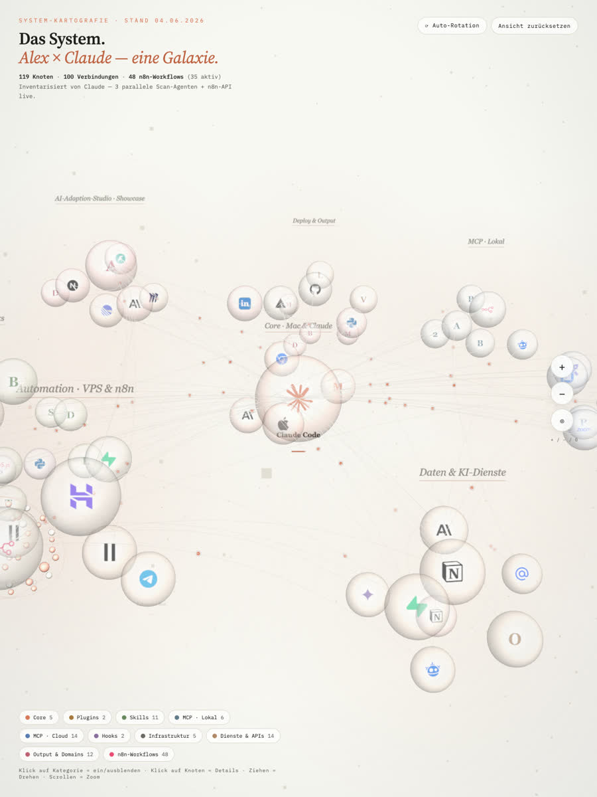
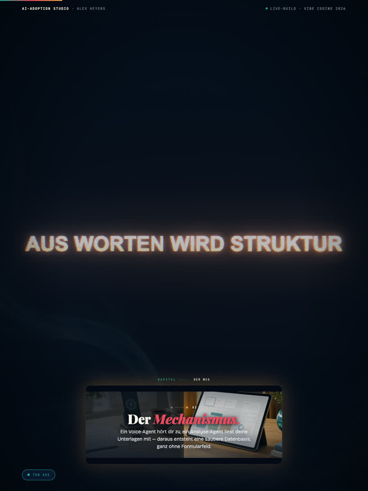
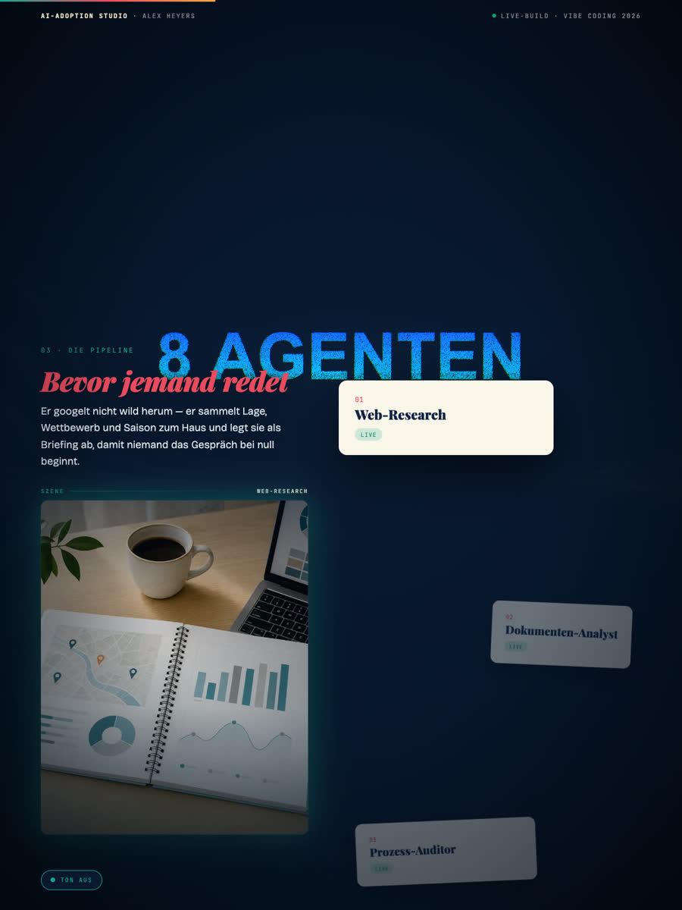

AI-Adoption-Studio
Strategie, Design und KI-Engineering aus einer Hand — von der ersten Skizze bis zum laufenden System. Das hier ist keine Seite. Es ist eine Fahrt.



Verstehen, Designen, Bauen — ein Pfad, kein Übergabedokument. Ada hört zu, sieben Analyse-Agenten zerlegen den Befund, die Ziel-Systemlandschaft entsteht, n8n setzt sie um.
105Fragen7Agenten1Pfad

Voice-Agent Ada führt das Interview — 105 Fragen im Pool, gestellt werden nur die richtigen. Sieben Agenten zerlegen die Antworten in Befunde.

Aus Befunden wird die Ziel-Systemlandschaft. Keine Tool-Liste: jede Verbindung hat einen Mechanismus, jeder Datenfluss eine Quelle.

Aus dem Design wird Workflow-JSON — generiert, validiert, deployt. Kein Report. Ein laufendes System.
Keine Illustration: to_galaxy(landscape) zeichnet jeden Knoten, jede Linie direkt aus den Daten — die Karte ist Code, nicht Folie. Nicht eine Präsentation bauen. Ein System bauen, das Präsentationen baut.
KI-Deklaration, Consent, „unterbrich mich“ — ab Sekunde eins. Dann erst das Gespräch. 105 Fragen im Pool, 10–15 pro Run.
Jeder Agent isoliert im eigenen Worktree. Keine Kollisionen, kein Chaos. Am Morgen: Code, der läuft — und ein Showstopper, der nie live ging.
Jeder Bauschritt öffentlich. Doku und Content sind dasselbe Artefakt. Nicht das fertige Tool zählt — der Weg dorthin.
MyFlowMotion ist das Studio von Alex Heyers — Vibe Coder, Solopreneur, Vater. Hier entstehen keine Tech-Demos, sondern Systeme mit Haltung: KI-Agenten, die sich vorstellen, bevor sie loslegen. Gebaut im Terminal, mit Claude Code — jeden Schritt öffentlich, Fehler inklusive.
9 Stationen · 1 Szene · alles live gebaut